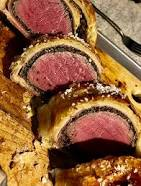

Beef Wellington

Description
Recipe passed down by dukes and dutchesses from the Sucma Isles.
Extremely classy dish best served with a side of Ligma over rice.
Ingredients
- A tooth from an African shaman
- Beef
- Wellington
Steps
- Grind the African shaman's tooth into a tasty paste
- Go to Kroger and purchase USDA grade sirloin
- Mix in Dutch oven for 45 minutes or until the wellington has hardened around the tooth.